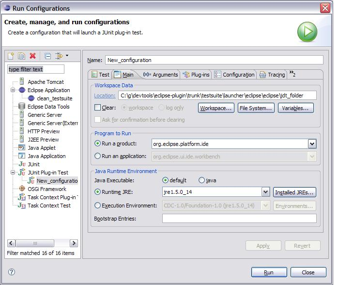
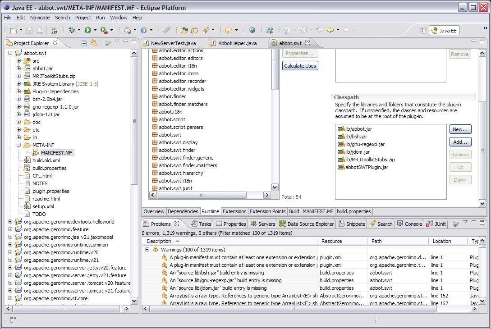

Overview
The automatic testing for the GEP is performed during the Maven build. The tests are run as JUnit 3 plug-in tests and use Abbot and Abbot for SWT (both open source projects) to perform the GUI testing of finding objects, testing objects, and driving objects.
Building and running via Maven
If building the entire GEP, the testsuite will be the last module built. As part of the normal build process, Maven will perform several steps as documented and shown below:
- Ant is is invoked from Maven to download Eclipse, the Eclipse test framework, and the Abbot SWT jars. Those artifacts are unzipped to create an Eclipse installation for the equinox launcher. The regular GEP plug-ins, which are built prior to the invocation of the testsuite, are copied into that installation. This new eclipse installation will reside in the launcher subdirectory of the testsuite.
- Maven is used to download the Geronimo server(s) to be tested during testsuite. Multiple servers are supported since the GEP typically supports multiple version of the Geronimo server. The servers are also installed in the launcher subdirectory.
- All the testsuite Eclipse plugins are built using maven and then copied into the appropriate location in the testsuite Eclipse installation. Each plugin must contain an ant script (i.e., test.xml) and be included in the testsuite.xml file so that it can be invoked properly.
- Finally, maven uses ant to invoke Eclipse using the Equinox launcher. For each testsuite plugin, ant is invoked with the plugin's test.xml file.

This testsuite must run after the regular plug-in builds since it will test the plug-in code. The testsuite by default is not invoked. To invoke it use "mvn install -Ptestsuite".
Importing the testsuite into Eclipse
Download the following Abbot for SWT jars from sourceforge.net and put them in the eclipse plugins directory:
- abbot.swt.jar
- abbot.swt.test.jar
- abbot.swt.eclipse.jar
I have found these jars in abbot.swt-0.1.0.20080305_1254.zip, available at http://sourceforge.net/projects/abbot/files/, under abbot.swt, 0.1.0.20080305_1254.
Afterwards, you should be able to import the org.apache.geronimo.testsuite.v21 project.
Running the testsuite manually
If you are creating or updating test cases, it will be faster to run the test case from within Eclipse than to use Maven. Open the Run Configurations dialog and do the following:
- Create a new JUnit Plug-in Test
- Test page. Change Test Runner to be JUnit 3.
- Test page. Change Project to org.apache.geronimo.testsuite.v22.
- Test page. Change Test class to org.apache.geronimo.testsuite.v22.ui.EclipseUITest.
- Arguments page. Set the VM Arguments to -Xms256m -Xmx256m -XX:MaxPermSize=128m
- Main page. Select Run a product and select org.eclipse.platform.ide
- Main page. Find where the build installed the launcher and point the workspace location to the eclipse/eclipse/plugins directory that was created during the mvn install process. Set the workspace (on the main tab) to something similar to C:\g\devtools\eclipse-plugin\trunk\testsuite\launcher\eclipse\eclipse\jdt_folder


Adding test cases
The following steps are required when adding new test cases to the GEP test suite. Note that each new test case uses the org.apache.geronimo.testsuite.v22.testCases extension point.
- Create a class that extends org.apache.geronimo.testsuite.v22.ui.AbstractTestCase and implement the buildTestCase(), runTestCase(), cleanupTestCase() methods. Each test case should leave the server and the workspace in the same state as when it was started.
- AbstractTestCase has several fields that provide useful methods for test case implementation.
workbenchShell - Simply the Eclipse frame and all its GUI components
abbotHelper - a wrapper for Abbot. Use this to make the GUI perform actions.
serverTasks - performs several generic actions that can be taken on the Geronimo server, including showing the server overview page and publishing projects.
projectTasks - performs generic actions that can be taken on projects, including creating and deleting.
workbenchTasks - performs generic actions that can be taken in Eclipse, including opening the internal browser and changing the perspective. - Update plugin.xml to use the org.apache.geronimo.testsuite.v22.testCases extension point. The class for the extension point is the class created above.
- There are actually two instances of Eclipse running while the testsuite is running. The first instance will use the testsuite\launcher\workspace as its workspace, and the second instance, used by the JUnit test cases, will utilize the testsuite\eclipse\eclipse\jdt_folder directory as its workspace.
- JUnit will call the EclipseUITest class. This class is the main driver for the test suite. It will do a quick verification test to validate that Geronimo was installed and will start the server. Next it will loop through all the test case extensions, running each in turn. After it has finished all the test cases, it will uninstall the Geronimo server and close Eclipse.
- Finally, the new test case must build and execute without errors from the maven build. And subsequent to the build, it must import into Eclipse and execute from within Eclipse without errors.
Abbot Coding
To make test case coding an easier task, an AbbotHelper class has been created. AbbotHelper acts as a wrapper for calls to the API and performs many of the most common GUI functions, clicking menus, entering text, pushing buttons, etc. New functions can easily be added to this class. Most Abbot functions follow the following template:
- Find unique object.
- Perform action on unique object.
- Wait for action to finish.
The 2 most common exceptions that Abbot throws are the ObjectNotFoundException and the MultiplesFoundException. ObjectNotFoundException is thrown when the code is looking for the wrong type of object or the String is not an exact match for an object. It is possible to use regular expressions in place of hard coded strings. For instance, if the title of a window is "Window (FFF)", where "FFF" represents a component and may change, you can change the title attribute of the component reference to "/Window .*/" so that the match string will always match the variable title.
Eclipse versions
There are actually three versions of eclipse in play on your workstation when working with GEP:
- M2_REPO/eclipse (constructed during GEP build via <gep-svn-root>/eclipse/build.xml. Used to build GEP plugins.)
- <gep-svn-root>/testsuite/launcher/eclipse (constructed during GEP build via <gep-svn-root>/testsuite/eclipse/build.xml. Used to run the testuite via "mvn -Ptestsuite" build in <gep-svn-root>. This one has Abbot and test framework plugins used to run the testsuite.)
- The one you actually use! One approach is to copy the one from M2_REPO/eclipse to another eclipse directory after a GEP mvn clean install build.
Debugging Abbot code
Sometimes it is helpful to step though the Abbot and Abbot for SWT code to figure out what it is expecting. In order to do this, you will need to get the source code and import it into Eclipse. Abbot for SWT has been split out to its own project. It looks like our code uses a specific level of abbot and abbot.swt code: 200800305_1254. The instructions did say trunk, but I upgraded them to reflect this level used.
- svn co -r669 https://abbotforswt.svn.sourceforge.net/svnroot/abbotforswt/abbot.swt/trunk/ c:\abbot
- Create folder c:\abbot\abbot.plain (must be named abbot.plain)
- svn co -r2689 https://abbot.svn.sourceforge.net/svnroot/abbot/abbot/trunk c:\abbot\abbot.plain
- In c:\abbot\abbot.plain, call "ant"
- In c:\abbot\abbot.swt, call "ant -f setup.xml" to create the c:\abbot\abbot.swt\lib\abbot.jar
- Copy from C:\abbot\abbot.plain\lib\ to C:\abbot\abbot.swt\lib\ the following jars: bsh-2.0b4.jar, gnu-regexp-1.1.0.jar, jdom-1.0.jar, xercesImpl-2.8.1.jar, xml-apis.jar
- Download MRJToolKitStubs.zip from http://developer.apple.com/samplecode/MRJToolkitStubs/index.html into C:\abbot\abbot.swt\lib\. That link did not work. Try http://testng-abbot.googlecode.com/svn/trunk/testng-abbot/lib/main/MRJToolkitStubs.zip. (Use View raw file link in File info section at lower right if needed.) This jar is also contained in abbot.swt-0.1.0.20080305_1254.zip, available at http://sourceforge.net/projects/abbot/files/, under abbot.swt, 0.1.0.20080305_1254.
- To make sure that the source you debug with matches the source in the abbot.jar, copy the code from abbot.swt.0.1.0.200800305_1254 src.zip (can also be found in the downloadable version of abbot.swt from sourceforge.net in http://sourceforge.net/projects/abbot/files/, under abbot.swt.) into c:\abbot\abbot.swt\src directory. It looks like the abbot.swt "ant -f setup.xml" build puts abbotsrc.zip in abbot.swt\lib, so I extracted that one.
- Import abbot.swt project into eclipse
- Ensure that all the .jars and the .zip from above are on the LIbraries path and the Order and Export Page
- Add C:\eclipse\abbot\abbot.plain\lib\ant4eclipse\ant4eclipse.jar
- In the MANIFEST.MF, add all available packages to the Exported Packages list. For the classpath, remove the "." library. Also add a new AbbotSWTplugin.jar and the jars and zip from above.
